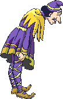

laga
de ratas. Miles y miles de ratas tomaron las calles de la ciudad. Se comieron
las provisiones y las cosechas y mordieron a
muchos habitantes.
laga
de ratas. Miles y miles de ratas tomaron las calles de la ciudad. Se comieron
las provisiones y las cosechas y mordieron a
muchos habitantes.
Para Raquel una niña muy linda que vive en Elechas y su mamá se llama Patricia
En una bonita y mágica ciudad
llamada Hamelín hubo una vez una plaga
de ratas. Miles y miles de ratas tomaron las calles de la ciudad. Se comieron
las provisiones y las cosechas y mordieron a
muchos habitantes.
El alcalde de la ciudad no pudo deshacerse de las ratas de ninguna manera y, desesperado, ofreció una recompensa de 100 monedas de oro para quien las hiciera desaparecer.
Al cabo de pocos días apareció en Hamelín un extraño personaje. Era alto y flaco, llevaba una túnica multicolor, una pluma en el sombrero y una flauta bajo el brazo.
El flautista se dirigió a la casa del Alcalde y le dijo que el haría desaparecer toda las ratas con su flauta mágica. Empezó a tocar, era una hermosa melodía que se oía en todo Hamelín.
Al instante empezaron a salir ratas de todos los rincones de la ciudad y como si estuvieran hechizadas siguieron al flautista hacia el río y todas se ahogaron en el.
Todos en el pueblo estaban muy contentos e hicieron una fiesta para celebrarlo, pero cuando el flautista fue a pedir su recompensa, el Alcalde, tacaño y desagradecido se negó a pagarle. El flautista se enfadó mucho y dijo que se vengaría.

Al día siguiente, el flautista se dirigió a la plaza del pueblo y comenzó tocar su flauta, era una música tan mágica y bonita que todos los niños de la ciudad salían de sus casas para seguir al flautista.
El flautista se dirigió hacia una montaña. La montaña se abrió y todos los niños desaparecieron dentro de dicha montaña.

Por culpa de la avaricia del Alcalde, Hamelín se quedó sin niños y se convirtió en una ciudad muy triste.
Relato anterior Relato siguiente